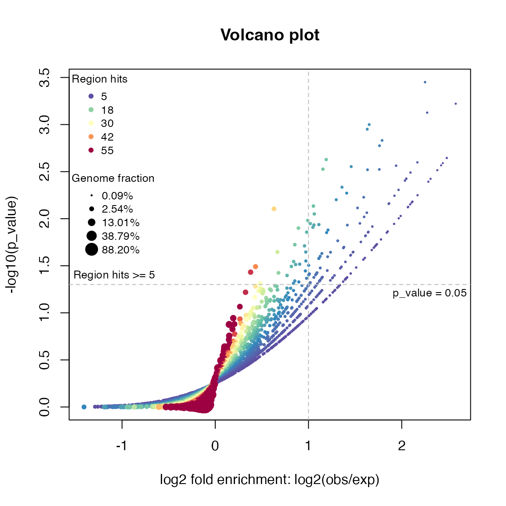
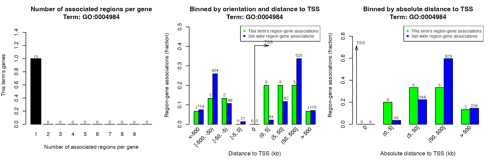

vignettes/online-GREAT.Rmd
online-GREAT.RmdNote: On Aug 19 2019 GREAT released version 4 which supports hg38 genome and removes some ontologies such pathways. submitGreatJob() still takes hg19 as default. hg38 can be specified by argument species = "hg38". To use the older versions such as 3.0.0, specify as submitGreatJob(..., version = "3").
GREAT (Genomic Regions Enrichment of Annotations Tool) is a popular web-based tool to associate biological functions to genomic regions. The rGREAT package makes GREAT anlaysis automatic by first constructing a HTTP POST request according to user’s input and retrieving results from GREAT web server afterwards.
Load the package:
The input data is either a GRanges object or a BED-format data frame, no matter it is sorted or not. In following example, we use a GRanges object which is randomly generated.
set.seed(123)
gr = randomRegions(nr = 1000, genome = "hg19")
head(gr)## GRanges object with 6 ranges and 0 metadata columns:
## seqnames ranges strand
## <Rle> <IRanges> <Rle>
## [1] chr1 9204434-9208784 *
## [2] chr1 9853594-9859363 *
## [3] chr1 10862809-10871681 *
## [4] chr1 12716970-12723206 *
## [5] chr1 13814692-13823250 *
## [6] chr1 19243285-19247097 *
## -------
## seqinfo: 26 sequences from an unspecified genome; no seqlengthsSubmit genomic regions by submitGreatJob().
The returned variable job is a GreatJob class instance which can be used to retrieve results from GREAT server and store results which are already downloaded.
job = submitGreatJob(gr)You can get the summary of your job by directly printing job.
job## Submit time: 2022-06-05 21:52:19
## Note the results may only be avaiable on GREAT server for 24 hours.
## Version: 4.0.4
## Species: hg19
## Inputs: 1000 regions
## Mode: Basal plus extension
## Proximal: 5 kb upstream, 1 kb downstream,
## plus Distal: up to 1000 kb
## Include curated regulatory domains
##
## Enrichment tables for following ontologies have been downloaded:
## NoneMore parameters can be set for the job:
job = submitGreatJob(gr, species = "mm9") # of course, gr should be from mm9
job = submitGreatJob(gr, adv_upstream = 10, adv_downstream = 2, adv_span = 2000)
job = submitGreatJob(gr, rule = "twoClosest", adv_twoDistance = 2000)
job = submitGreatJob(gr, rule = "oneClosest", adv_oneDistance = 2000)Also you can choose different versions of GREAT for the analysis.
job = submitGreatJob(gr, version = "3.0")
job = submitGreatJob(gr, version = "2.0")
Note: from rGREAT package 1.99.0, background by bg argument is not supported any more (currently you can still use it, but you will see a warning message), because GREAT requires a special format for gr and bg if both are set, and it uses a different method for the enrichment analysis and returns enrichment tables in a different format. But still, you can use local GREAT to integrate background regions.
Available parameters are (following content is copied from GREAT website):
species: “hg38”, “hg19”, “mm10”, “mm9” are supported in GREAT version 4.x.x, “hg19”, “mm10”, “mm9”, “danRer7” are supported in GREAT version 3.x.x and “hg19”, “hg18”, “mm9”, “danRer7” are supported in GREAT version 2.x.x.includeCuratedRegDoms: Whether to include curated regulatory domains.rule: How to associate genomic regions to genes.
basalPlusExt: mode ‘Basal plus extension’. Gene regulatory domain definition: Each gene is assigned a basal regulatory domain of a minimum distance upstream and downstream of the TSS (regardless of other nearby genes). The gene regulatory domain is extended in both directions to the nearest gene’s basal domain but no more than the maximum extension in one direction.
adv_upstream: proximal extension to upstream (unit: kb)adv_downstream: proximal extension to downstream (unit: kb)adv_span: maximum extension (unit: kb)twoClosest: mode ‘Two nearest genes’. Gene regulatory domain definition: Each gene is assigned a regulatory domain that extends in both directions to the nearest gene’s TSS but no more than the maximum extension in one direction.
adv_twoDistance: maximum extension (unit: kb)oneClosest: mode ‘Single nearest gene’. Gene regulatory domain definition: Each gene is assigned a regulatory domain that extends in both directions to the midpoint between the gene’s TSS and the nearest gene’s TSS but no more than the maximum extension in one direction.
adv_oneDistance: maximum extension (unit: kb)GREAT uses the UCSC bed-format where genomic coordinates are 0-based. Many R packages generate genomic regions as 1-based. Thus by default, the start positions of regions are subtracted by 1. If your regions are already 0-based, you can specify gr_is_zero_based = TRUE in submitGreatJob(). Anyway in most cases, this will only slightly affect the enrichment results.
With job, we can now retrieve results from GREAT. The first and the primary results are the tables which contain enrichment statistics for the analysis. By default it will retrieve results from three GO Ontologies. All tables contains statistics for all terms no matter they are significant or not. Users can then make filtering with self-defined cutoff.
There is a column for adjusted p-values by “BH” method. Other p-value adjustment methods can be applied by p.adjust().
The returned value of getEnrichmentTables() is a list of data frames in which each one corresponds to the table for a single ontology. The structure of data frames are same as the tables on GREAT website.
tbl = getEnrichmentTables(job)## The default enrichment tables contain no associated genes for the input
## regions.You can set `download_by = 'tsv'` to download the complete
## table,but note only the top 500 regions can be retreived. See the
## following link:
##
## https://great-help.atlassian.net/wiki/spaces/GREAT/pages/655401/Export#Export-GlobalExport
names(tbl)## [1] "GO Molecular Function" "GO Biological Process" "GO Cellular Component"
tbl[[1]][1:2, ]## ID name
## 1 GO:0070696 transmembrane receptor protein serine/threonine kinase binding
## 2 GO:0033612 receptor serine/threonine kinase binding
## Binom_Genome_Fraction Binom_Expected Binom_Observed_Region_Hits
## 1 0.003455733 3.455733 11
## 2 0.003596413 3.596413 11
## Binom_Fold_Enrichment Binom_Region_Set_Coverage Binom_Raw_PValue
## 1 3.183116 0.011 0.0008981541
## 2 3.058603 0.011 0.0012301660
## Binom_Adjp_BH Hyper_Total_Genes Hyper_Expected Hyper_Observed_Gene_Hits
## 1 1 13 0.9938002 5
## 2 1 15 1.1466930 5
## Hyper_Fold_Enrichment Hyper_Gene_Set_Coverage Hyper_Term_Gene_Coverage
## 1 5.031192 0.003526093 0.3846154
## 2 4.360367 0.003526093 0.3333333
## Hyper_Raw_PValue Hyper_Adjp_BH
## 1 0.001982437 0.4919942
## 2 0.004066220 0.6862153Information stored in job will be updated after retrieving enrichment tables.
job## Submit time: 2022-06-05 21:52:19
## Note the results may only be avaiable on GREAT server for 24 hours.
## Version: 4.0.4
## Species: hg19
## Inputs: 1000 regions
## Mode: Basal plus extension
## Proximal: 5 kb upstream, 1 kb downstream,
## plus Distal: up to 1000 kb
## Include curated regulatory domains
##
## Enrichment tables for following ontologies have been downloaded:
## GO Biological Process
## GO Cellular Component
## GO Molecular FunctionYou can get results by either specifying the ontologies or by the pre-defined categories (categories already contains pre-defined sets of ontologies):
tbl = getEnrichmentTables(job, ontology = c("GO Molecular Function", "Human Phenotype"))
tbl = getEnrichmentTables(job, category = c("GO"))As you have seen in the previous messages and results, The enrichment tables contain no associated genes. However, you can set download_by = 'tsv' in getEnrichmentTables() to download the complete tables, but due to the restriction from GREAT web server, only the top 500 regions can be retreived (check the last two columns of tbl2[["GO Molecular Function"]] in the following example).
tbl2 = getEnrichmentTables(job, download_by = "tsv")
nrow(tbl2[["GO Molecular Function"]])## [1] 500
head(tbl2[["GO Molecular Function"]])## Ontology ID
## 1 GO Molecular Function GO:0070696
## 2 GO Molecular Function GO:0033612
## 3 GO Molecular Function GO:0070700
## 4 GO Molecular Function GO:0039706
## 5 GO Molecular Function GO:0043997
## 6 GO Molecular Function GO:0016628
## Desc
## 1 transmembrane receptor protein serine/threonine kinase binding
## 2 receptor serine/threonine kinase binding
## 3 BMP receptor binding
## 4 co-receptor binding
## 5 histone acetyltransferase activity (H4-K12 specific)
## 6 oxidoreductase activity, acting on the CH-CH group of donors, NAD or NADP as acceptor
## BinomRank BinomP BinomBonfP BinomFdrQ RegionFoldEnrich ExpRegions
## 1 1 0.0008981541 1 1 3.183116 3.455733000
## 2 2 0.0012301660 1 1 3.058603 3.596413000
## 3 3 0.0016393810 1 1 3.740233 2.138904000
## 4 4 0.0023418690 1 1 3.528158 2.267472000
## 5 5 0.0030097780 1 1 331.750600 0.003014312
## 6 6 0.0054752450 1 1 3.370439 2.076881000
## ObsRegions GenomeFrac SetCov HyperRank HyperP HyperBonfP HyperFdrQ
## 1 11 3.455733e-03 0.011 17 0.001982437 1 0.4919942
## 2 11 3.596413e-03 0.011 25 0.004066220 1 0.6862153
## 3 8 2.138904e-03 0.008 21 0.003134656 1 0.6297673
## 4 8 2.267472e-03 0.008 26 0.004910112 1 0.7967601
## 5 1 3.014312e-06 0.001 206 0.076446170 1 1.0000000
## 6 7 2.076881e-03 0.007 113 0.032459480 1 1.0000000
## GeneFoldEnrich ExpGenes ObsGenes TotalGenes GeneSetCov TermCov
## 1 5.031192 0.99380020 5 13 0.0035260930 0.3846154
## 2 4.360367 1.14669300 5 15 0.0035260930 0.3333333
## 3 5.813822 0.68801550 4 9 0.0028208740 0.4444444
## 4 5.232440 0.76446170 4 10 0.0028208740 0.4000000
## 5 13.081100 0.07644617 1 1 0.0007052186 1.0000000
## 6 2.725229 1.83470800 5 24 0.0035260930 0.2083333
## Regions
## 1 chr14:53723016-53727464,chr14:54043181-54046011,chr14:54246872-54252690,chr14:54507052-54511526,chr1:39962953-39966421,chr20:6656760-6662137,chr20:7709224-7716863,chr4:81815618-81820924,chr7:78250870-78252206,chr7:78552029-78555506,chr7:78826328-78833108
## 2 chr14:53723016-53727464,chr14:54043181-54046011,chr14:54246872-54252690,chr14:54507052-54511526,chr1:39962953-39966421,chr20:6656760-6662137,chr20:7709224-7716863,chr4:81815618-81820924,chr7:78250870-78252206,chr7:78552029-78555506,chr7:78826328-78833108
## 3 chr14:53723016-53727464,chr14:54043181-54046011,chr14:54246872-54252690,chr14:54507052-54511526,chr1:39962953-39966421,chr20:6656760-6662137,chr20:7709224-7716863,chr4:81815618-81820924
## 4 chr12:40668101-40675261,chr14:53723016-53727464,chr14:54043181-54046011,chr14:54246872-54252690,chr14:54507052-54511526,chr20:6656760-6662137,chr20:7709224-7716863,chr4:108602274-108611808
## 5 chr17:40269780-40277752
## 6 chr18:72664253-72674209,chr1:225809048-225812045,chr1:97386536-97391160,chr1:98324959-98333882,chr1:98723725-98728003,chr4:56013173-56018747,chr7:137727658-137734217
## Genes
## 1 BMP2,BMP3,BMP4,BMP8A,MAGI2
## 2 BMP2,BMP3,BMP4,BMP8A,MAGI2
## 3 BMP2,BMP3,BMP4,BMP8A
## 4 BMP2,BMP4,DKK2,LRRK2
## 5 KAT2A
## 6 AKR1D1,DPYD,LBR,SRD5A3,ZADH2All available ontology names for a given species can be get by availableOntologies() and all available ontology categories can be get by availableCategories(). Here you do not need to provide species information because job already contains it.
availableOntologies(job)## [1] "GO Molecular Function" "GO Biological Process"
## [3] "GO Cellular Component" "Mouse Phenotype"
## [5] "Mouse Phenotype Single KO" "Human Phenotype"
## [7] "Ensembl Genes"
availableCategories(job)## [1] "GO" "Phenotype" "Genes"
availableOntologies(job, category = "GO")## [1] "GO Molecular Function" "GO Biological Process" "GO Cellular Component"In differential gene expression analysis, volcano plot is used to visualize relations between log2 fold change and (adjusted) p-values. Similarly, we can also use volcano plot to visualize relations between fold enrichment and (adjusted) p-values for the enrichment analysis. The plot is made by the function plotVolcano():
plotVolcano(job, ontology = "GO Biological Process")
As the enrichment analysis basically only looks for over-representations, it is actually half volcano.
Association between genomic regions and genes can be plotted by plotRegionGeneAssociations(). The function will make the three plots which are same as on GREAT website.
getRegionGeneAssociations() returns a GRanges object which contains the gene-region associations. Note the column dist_to_TSS is based on the middle points of the input regions to TSS.
## GRanges object with 885 ranges and 2 metadata columns:
## seqnames ranges strand | annotated_genes dist_to_TSS
## <Rle> <IRanges> <Rle> | <CharacterList> <IntegerList>
## [1] chr1 9204433-9208784 * | H6PD,GPR157 -88225,-17380
## [2] chr1 9853593-9859363 * | CLSTN1,PIK3CD 28106,144675
## [3] chr1 10862808-10871681 * | TARDBP,CASZ1 -205454,-10540
## [4] chr1 12716969-12723206 * | AADACL3,AADACL4 -56058,15522
## [5] chr1 13814691-13823250 * | LRRC38,PRAMEF20 21572,82064
## ... ... ... ... . ... ...
## [881] chrY 16384798-16389852 * | NLGN4Y,VCY1B -248301,219228
## [882] chrY 16842592-16846893 * | NLGN4Y 209117
## [883] chrY 16998749-17003225 * | NLGN4Y 365361
## [884] chrY 24401611-24406252 * | RBMY1J,RBMY1F -145685,-74837
## [885] chrY 26206996-26215445 * | BPY2B,CDY1B -552930,-17105
## -------
## seqinfo: 24 sequences from an unspecified genome; no seqlengthsPlease note the two meta columns are in formats of CharacterList and IntegerList because a region may associate to multiple genes.
You can also choose only plotting one of the three figures.
plotRegionGeneAssociations(job, which_plot = 1)By specifying ontology and term ID, you can get the associations in a certain term. Here the term ID is from the first column of the data frame from getEnrichmentTables().
plotRegionGeneAssociations(job, ontology = "GO Molecular Function",
term_id = "GO:0004984")## The webpage for 'GO Molecular Function:GO:0004984' is available at:
## http://great.stanford.edu/public-4.0.4/cgi-bin/showTermDetails.php?termId=GO:0004984&ontoName=GOMolecularFunction&ontoUiName=GO Molecular Function&sessionName=20220605-public-4.0.4-HZYf7y&species=hg19&foreName=file9ff644e20562.gz&backName=&table=region
getRegionGeneAssociations(job, ontology = "GO Molecular Function",
term_id = "GO:0004984")## GRanges object with 12 ranges and 2 metadata columns:
## seqnames ranges strand | annotated_genes dist_to_TSS
## <Rle> <IRanges> <Rle> | <CharacterList> <IntegerList>
## [1] chr1 247871554-247874068 * | OR13G1,OR6F1 -36446,3294
## [2] chr5 180577319-180586838 * | OR2V2 136
## [3] chr11 4669903-4675668 * | OR51E1,OR51E2 8136,46286
## [4] chr11 50163532-50171101 * | OR4C12 -163246
## [5] chr11 51961270-51969107 * | OR4C46 449907
## ... ... ... ... . ... ...
## [8] chr12 48643532-48645814 * | OR10AD1 -47503
## [9] chr14 18596965-18604599 * | OR11H12 -776740
## [10] chr14 20760308-20769811 * | OR11H4 54162
## [11] chr14 22807515-22814493 * | OR4E2 677707
## [12] chr22 16218126-16222924 * | OR11H1 229280
## -------
## seqinfo: 6 sequences from an unspecified genome; no seqlengthsshinyReport() creates a Shiny application to view the complete results:
shinyReport(job)## R version 4.1.2 (2021-11-01)
## Platform: x86_64-apple-darwin17.0 (64-bit)
## Running under: macOS Big Sur 10.16
##
## Matrix products: default
## BLAS: /Library/Frameworks/R.framework/Versions/4.1/Resources/lib/libRblas.0.dylib
## LAPACK: /Library/Frameworks/R.framework/Versions/4.1/Resources/lib/libRlapack.dylib
##
## locale:
## [1] C/UTF-8/C/C/C/C
##
## attached base packages:
## [1] stats4 stats graphics grDevices utils datasets methods
## [8] base
##
## other attached packages:
## [1] rGREAT_1.99.2 GenomicRanges_1.46.1 GenomeInfoDb_1.30.0
## [4] IRanges_2.28.0 S4Vectors_0.32.3 BiocGenerics_0.40.0
## [7] knitr_1.37
##
## loaded via a namespace (and not attached):
## [1] bitops_1.0-7
## [2] matrixStats_0.61.0
## [3] fs_1.5.2
## [4] bit64_4.0.5
## [5] RColorBrewer_1.1-2
## [6] filelock_1.0.2
## [7] progress_1.2.2
## [8] httr_1.4.2
## [9] rprojroot_2.0.2
## [10] tools_4.1.2
## [11] bslib_0.3.1
## [12] utf8_1.2.2
## [13] R6_2.5.1
## [14] DT_0.20
## [15] colorspace_2.0-2
## [16] DBI_1.1.2
## [17] GetoptLong_1.1.0
## [18] tidyselect_1.1.1
## [19] prettyunits_1.1.1
## [20] bit_4.0.4
## [21] curl_4.3.2
## [22] compiler_4.1.2
## [23] textshaping_0.3.6
## [24] Biobase_2.54.0
## [25] xml2_1.3.3
## [26] desc_1.4.0
## [27] DelayedArray_0.20.0
## [28] rtracklayer_1.54.0
## [29] sass_0.4.0
## [30] rappdirs_0.3.3
## [31] pkgdown_2.0.2
## [32] systemfonts_1.0.3
## [33] stringr_1.4.0
## [34] digest_0.6.29
## [35] Rsamtools_2.10.0
## [36] rmarkdown_2.11
## [37] XVector_0.34.0
## [38] pkgconfig_2.0.3
## [39] htmltools_0.5.2
## [40] MatrixGenerics_1.6.0
## [41] highr_0.9
## [42] dbplyr_2.1.1
## [43] fastmap_1.1.0
## [44] GlobalOptions_0.1.2
## [45] htmlwidgets_1.5.4
## [46] rlang_0.4.12
## [47] RSQLite_2.2.9
## [48] shiny_1.7.1
## [49] shape_1.4.6
## [50] TxDb.Hsapiens.UCSC.hg19.knownGene_3.2.2
## [51] jquerylib_0.1.4
## [52] BiocIO_1.4.0
## [53] generics_0.1.1
## [54] jsonlite_1.7.2
## [55] BiocParallel_1.28.3
## [56] dplyr_1.0.7
## [57] RCurl_1.98-1.5
## [58] magrittr_2.0.1
## [59] GO.db_3.14.0
## [60] GenomeInfoDbData_1.2.7
## [61] Matrix_1.4-0
## [62] Rcpp_1.0.7
## [63] fansi_1.0.2
## [64] lifecycle_1.0.1
## [65] stringi_1.7.6
## [66] yaml_2.2.1
## [67] SummarizedExperiment_1.24.0
## [68] zlibbioc_1.40.0
## [69] org.Hs.eg.db_3.14.0
## [70] BiocFileCache_2.2.0
## [71] grid_4.1.2
## [72] blob_1.2.2
## [73] promises_1.2.0.1
## [74] parallel_4.1.2
## [75] crayon_1.4.2
## [76] lattice_0.20-45
## [77] Biostrings_2.62.0
## [78] GenomicFeatures_1.46.3
## [79] circlize_0.4.15
## [80] hms_1.1.1
## [81] KEGGREST_1.34.0
## [82] pillar_1.6.4
## [83] rjson_0.2.21
## [84] biomaRt_2.50.2
## [85] XML_3.99-0.8
## [86] glue_1.6.0
## [87] evaluate_0.14
## [88] httpuv_1.6.5
## [89] png_0.1-7
## [90] vctrs_0.3.8
## [91] purrr_0.3.4
## [92] assertthat_0.2.1
## [93] cachem_1.0.6
## [94] xfun_0.29
## [95] mime_0.12
## [96] xtable_1.8-4
## [97] restfulr_0.0.13
## [98] later_1.3.0
## [99] ragg_1.2.1
## [100] TxDb.Hsapiens.UCSC.hg38.knownGene_3.14.0
## [101] tibble_3.1.6
## [102] GenomicAlignments_1.30.0
## [103] AnnotationDbi_1.56.2
## [104] memoise_2.0.1
## [105] ellipsis_0.3.2